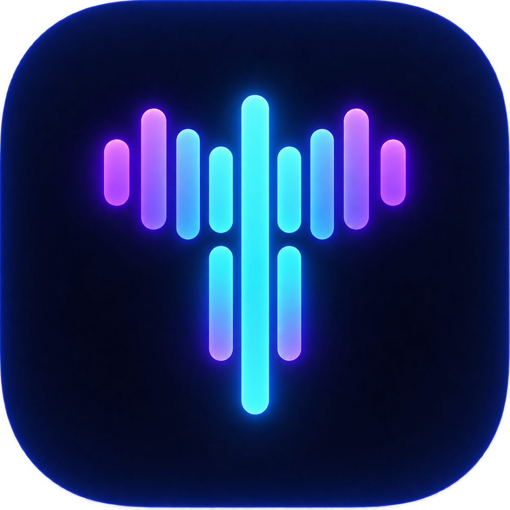
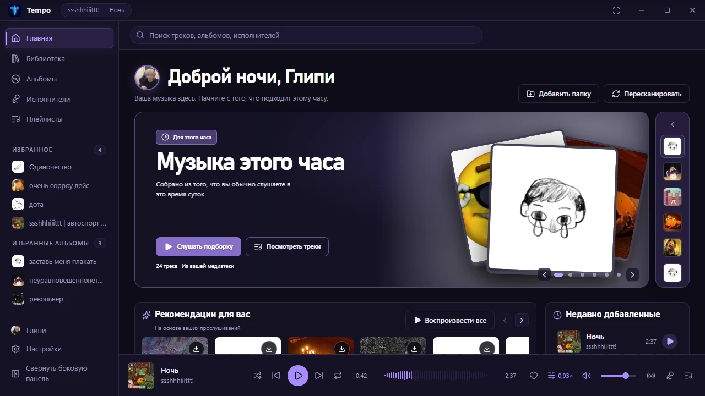
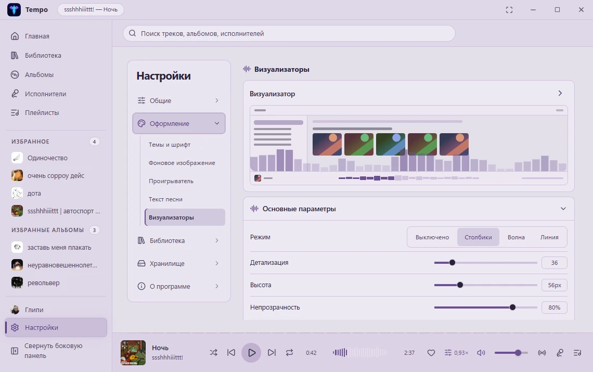
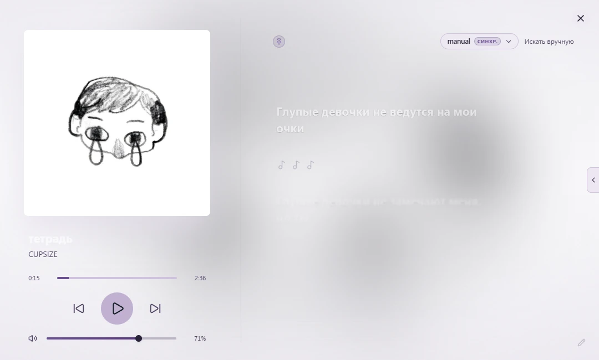
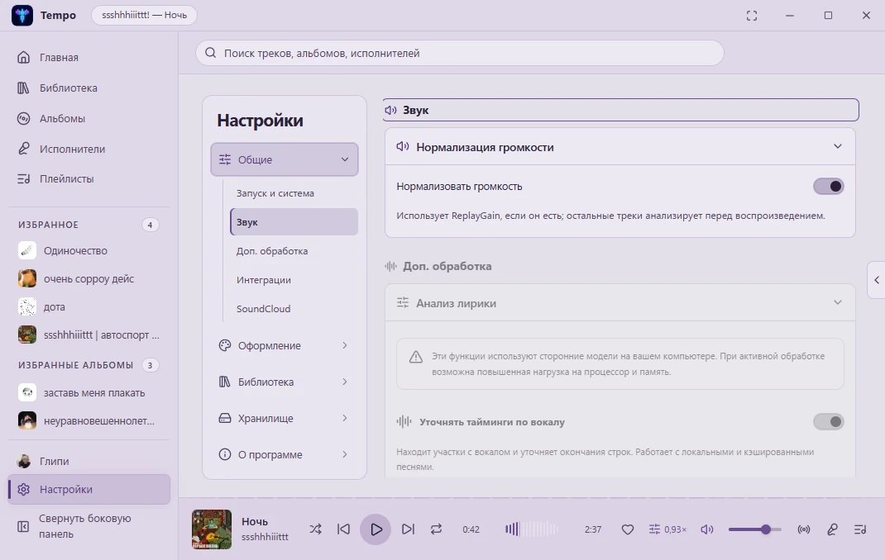
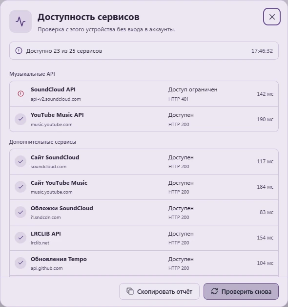

Миксы на первом месте
Раскрой боковую колонку подборок, чтобы увидеть их названия и состав.

TempoНовая главная, светлое оформление, удобные настройки и точная история плейлистов.

Раскрой боковую колонку подборок, чтобы увидеть их названия и состав.
Рекомендации, лайки и недавние треки можно листать прямо на главной.
Новые треки и часто включаемые плейлисты видны сбоку.
Выбери готовую палитру или собери свою. Tempo подберёт светлые или тёмные поверхности, а режим можно задать вручную.

Мягкие готовые темы по-разному окрашивают плеер, меню и боковую панель.
Автоопределение, светлая или тёмная. Акцент и градиент остаются твоими.
Все параметры выбранной категории на одной странице. Нужный раздел всегда под рукой в боковом списке.

Нажатие на подкатегорию плавно прокручивает до её заголовка и подсвечивает раздел.
Блоки сворачиваются и раскрываются плавно. Переключатели и слайдеры теперь оформлены одинаково.
Миниатюры показывают палитры, лирику и визуализатор, а тяжёлые превью загружаются по мере открытия.
Если в светлой теме привычнее читать белую лирику, включи её в настройках. Тонкая тёмная обводка сохраняет контраст.

Открой график на странице плейлиста, альбома или исполнителя. Выбери месяц и нажми на столбик, чтобы перейти к деталям дня.

Tempo запоминает плейлист, из которого трек попал в очередь.
Оценивается по прослушиваниям треков из текущего состава плейлиста.

Пример отчёта плейлиста
Перелистывай месяцы и раскрывай день до пятиминутных отрезков часа.
Нажми на трек или исполнителя в отчёте, чтобы посмотреть его статистику.
Две карточки по очереди показывают самые прослушиваемые треки.
Открой настройки трека через меню по правому клику. Tempo запомнит его громкость и скорость для следующих прослушиваний.


Нормализация заранее подготавливает уровень громкости и сохраняет измерения для повторов.
Tempo строит волну для локальных треков и YouTube Music. Пики можно хранить в кэше.
При сохранении тональности замедленные треки лучше сохраняют высокие частоты.
В «О программе» можно проверить музыкальные API, сайты, обложки, лирику и обновления прямо из Tempo.

У каждого сервиса свой статус, задержка и HTTP-код ответа.
Скопируй результаты или повтори проверку после смены сети.
Обложки занимают меньше памяти, а настройки подгружают тяжёлые элементы по мере открытия.
Обложки загружаются раньше, меню открываются там, где ты нажал, а музыка быстрее начинает играть.
Выбирается более чёткая версия. Рабочий вариант сохраняется для библиотеки, лирики и большого просмотра.
Правый клик по рекомендации или жанровому треку открывает меню прямо рядом с ним.
В каталоге исполнителей любимые имена идут первыми. Остальные появляются при прокрутке.
Альбомы и плейлисты SoundCloud и YouTube Music используют тот же стиль, что и локальные страницы.
Сначала показывается главная обложка альбома, плейлиста или исполнителя. Свет в профиле затухает плавнее.
Если уже идёт запись, следующая дожидается её завершения.
Tempo подбирает размер обложек и рисует карточки рядом с видимой частью полосы.
Плеер освобождает ресурсы неиспользуемого мини-плеера и заранее подготавливает громкость.